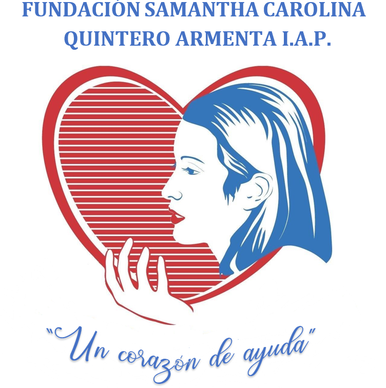
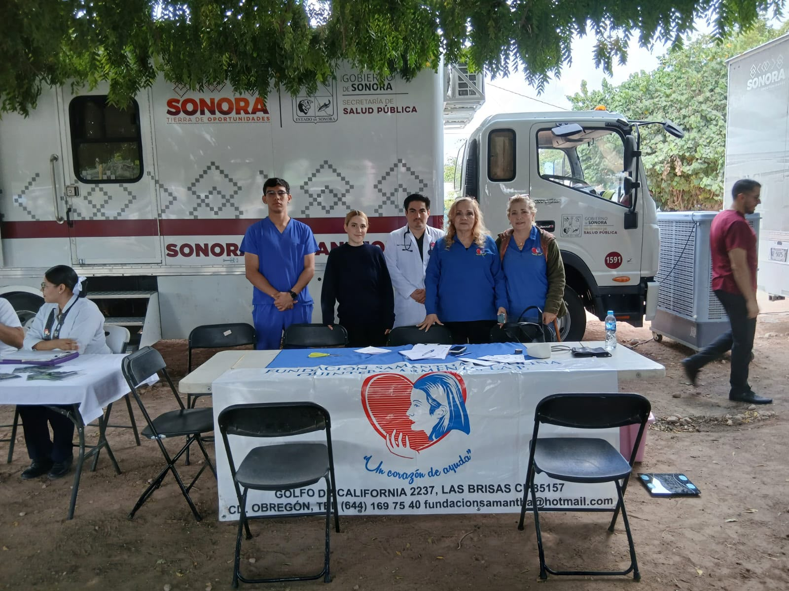
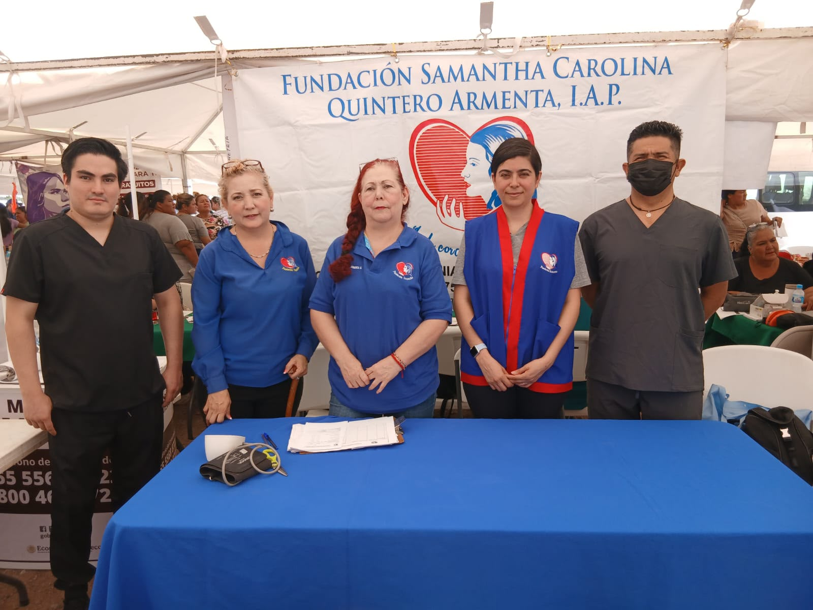
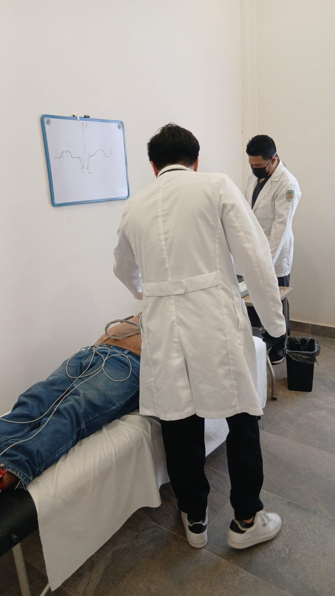
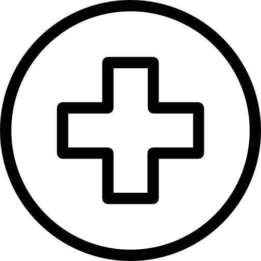

Apoyados por la Fundación Samantha, brindamos electrocardiogramas gratuitos y educación de salud de alta calidad para comunidades vulnerables. Cuidamos cada latido.




Nuestra labor se enfoca en la identificación precoz de anomalías cardiológicas. Con la sinergia de voluntarios y patrocinadores, llevamos tecnología de punta a donde más se necesita.
Brindar una atención de calidad y calidez humana a niños y jóvenes de escasos recursos con problemas cardiovasculares y poder ser para ellos una esperanza de vida.
Mejorar día con día en nuestra atención médica especializada, buscando implementar programas de apoyo de forma permanente, buscando contar con instalaciones más funcionales que nos permitan ofrecer una atención más integral a niños y jóvenes de escasos recursos que requieran de nuestro apoyo.
Apoyar a niños y jóvenes de escasos recursos con problemas cardiovasculares, así como con atención psicológica para él y su familia, buscando la mejor alternativa médica para la solución de su problema.
Nuestra labor incluye la realización de estudios directos, la conexión telemática con expertos y la educación continua para familias.
Realizamos electrocardiogramas clínicos completos de 12 derivaciones de forma gratuita en jornadas comunitarias, con entrega inmediata.
Impartimos pláticas informativas para educar a la población sobre control de peso, hipertensión, diabetes y hábitos protectores del corazón.

';" />Servicio de asistencia inicial que evalúa tus síntomas y gestiona de manera oportuna tu derivación directa hacia el médico general o especialista idóneo.
Brigadas médicas móviles que llevan atención preventiva a comunidades rurales, realizando toma de signos vitales y electrocardiogramas (ECG) en sitio.
Haz tu donación directamente mediante transferencia bancaria (SPEI) o calcula el impacto de tu aportación.